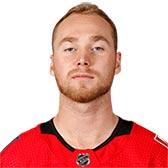

FLAMES
| Photo |
Name |
Number |
Position |
Shot |
Height |
Weight |
Birthday |
Hometown |
|
Mikael Backlund |
11 |
C |
L |
6' 0" |
200 |
Mar 17, 1989 |
Vasteras, SWE |
|  |
Sam Bennett |
93 |
C |
L |
6' 1" |
195 |
Jun 20, 1996 |
Holland Landing, ON, CAN |
|
Austin Czarnik |
27 |
C |
R |
5' 9" |
170 |
Dec 12, 1992 |
Detroit, MI, USA |
|
Michael Frolik |
67 |
RW |
L |
6' 1" |
190 |
Feb 17, 1988 |
Kladno, CZE |
|
Johnny Gaudreau |
13 |
LW |
L |
5' 9" |
165 |
Aug 13, 1993 |
Salem, NJ, USA |
|
Garnet Hathaway |
21 |
RW |
R |
6' 2" |
210 |
Nov 23, 1991 |
Kennebunkport, ME, USA |
|
Mark Jankowski |
77 |
C |
L |
6' 4" |
212 |
Sep 13, 1994 |
Hamilton, ON, CAN |
 |
Elias Lindholm |
28 |
C |
R |
6' 1" |
195 |
Dec 2, 1994 |
Boden, SWE |
|
Andrew Mangiapane |
88 |
LW |
L |
5' 10" |
184 |
Apr 04, 1996 |
Toronto, ON, CAN |
|
Sean Monahan |
23 |
C |
L |
6' 2" |
200 |
Oct 12, 1994 |
Brampton, ON, CAN |
|
James Neal |
18 |
LW |
L |
6' 3" |
212 |
Sep 3, 1987 |
Whitby, ON, CAN |
|
Derek Ryan |
10 |
C |
R |
5' 10" |
185 |
Dec 29, 1986 |
Spokane, WA, USA |
|
Matthew Tkachuk |
19 |
LW |
L |
6' 2" |
202 |
Dec 11, 1997 |
Scottsdale, AZ, USA |
| Photo |
Name |
Number |
Shot |
Height |
Weight |
Birthday |
Hometown |
|
Rasmus Andersson |
4 |
R |
6' 1" |
214 |
Oct 27, 1996 |
Malmo, SWE |
|
TJ Brodie |
7 |
L |
6' 1" |
185 |
Jun 7, 1990 |
Chatham, ON, CAN |
|
Mark Giordano |
5 |
L |
6' 1" |
200 |
Oct 3, 1983 |
Toronto, ON, CAN |
|
Travis Hamonic |
24 |
R |
6' 2" |
205 |
Aug 16, 1990 |
St. Malo, MB, CAN |
|
Noah Hanifin |
55 |
L |
6' 3" |
215 |
Jan 25, 1997 |
Boston, MA, USA |
|
Oliver Kylington |
58 |
L |
6' 0" |
183 |
May 19, 1997 |
Stockholm, SWE |
|
Dalton Prout |
6 |
R |
6' 3" |
215 |
Mar 13, 1990 |
Kingsville, ON, CAN |
|
Michael Stone |
26 |
R |
6' 3" |
210 |
Jun 7, 1990 |
Winnipeg, MB, CAN |
|
Juuso Valimaki |
8 |
L |
6' 2" |
212 |
Oct 6, 1998 |
Tampere, FIN |
| Photo |
Name |
Number |
Height |
Weight |
Birthday |
Hometown |
|
David Rittich |
33 |
6' 3" |
206 |
Aug 19, 1992 |
Jihlava, CZE |
|
Mike Smith |
41 |
6' 5" |
220 |
Mar 22, 1982 |
Kingston, ON, CAN |